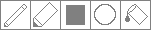

DotStar Drawing Tool (
240mm disc
|
8x32 panel
)
by Shawn Wilson
Model different LED arrangements for DotStar LED discs or rectangles (available from Adafruit.com). Draw using the tools below. Copy and paste the Arduino code below into your sketch.
Examples
